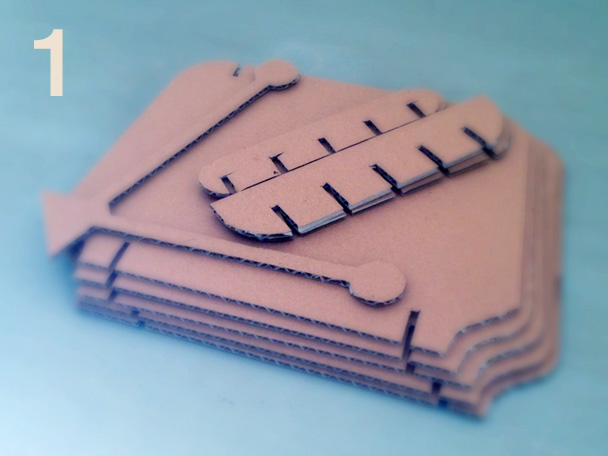
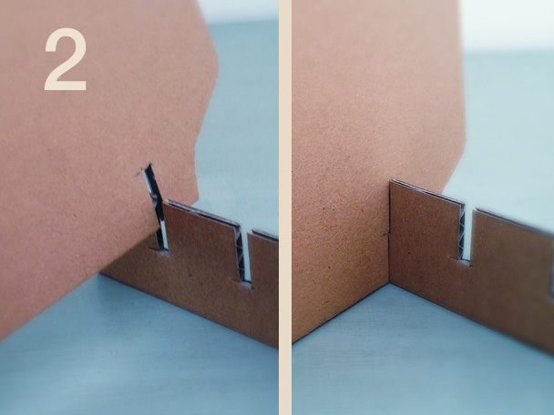
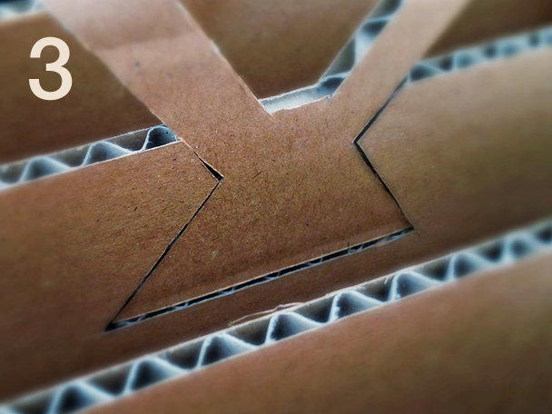
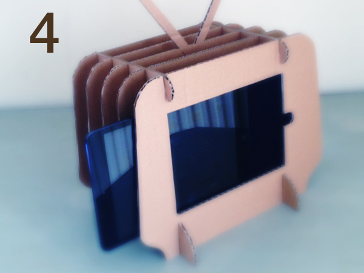
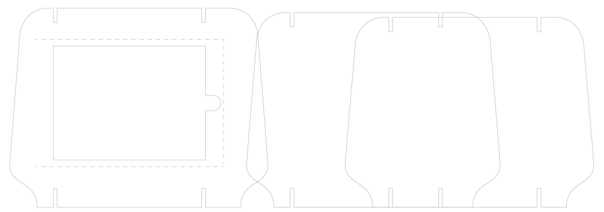
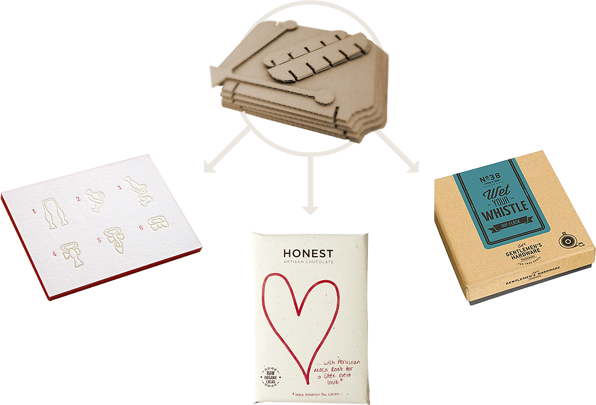
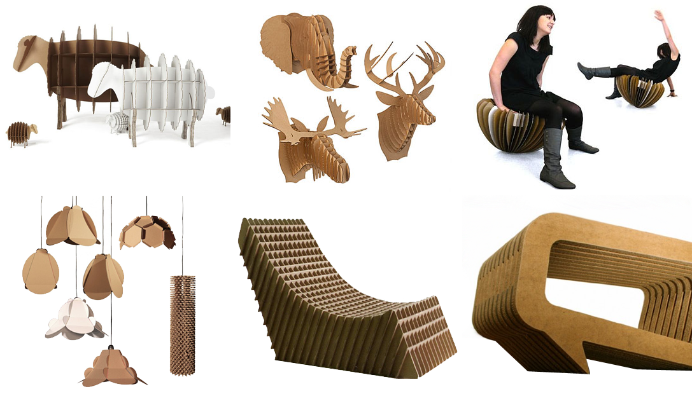

What the heck is this thing? Well, it’s a simple cardboard contraption inspired by vintage tv-design, recycled materials, and an iPad mini.
-
It starts as a few pieces of cardboard — die-cut into just the right shapes.
 -
They fit together easily, no glue or fancy fingerwork required.
 -
There’s even an antenna which fits neatly into place.
 -
When it’s all ready, you simply slide the iPad into its pocket (a small piece of nylon glued to the back of the panel).

And voilà. You watch.
That is, you would watch, if this thing actually existed.
(Right now it's just templates designed in Illustrator and a slightly ragged, hand-made prototype)
However...
if it were possible to produce this well, people might be willing to pay something for it.
What would that take — to produce it well?
Some nice packaging wouldn't hurt. Something simple & elegant.
The examples above could be worth exploring:
- a.Pieces could come in a plain rectangular box with instructions printed on the cover (upper left).
- b.Even simpler: just a paper envelope with a nicely designed cover (middle).
- c.Or: a basic rigid box with a nice label (upper right).
Screen-printed designs on the front panel could make each one distinct.
Heavy-guage cardboard would make it substantial.
Finally, machine die-cuts would make it look good — not like a homespun craft.
(The images below are just a few examples found around the internet.)
Could the prototype become something cool like the objects above? Could it sell, say, for something like this?